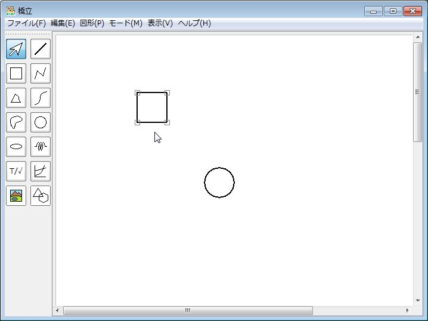
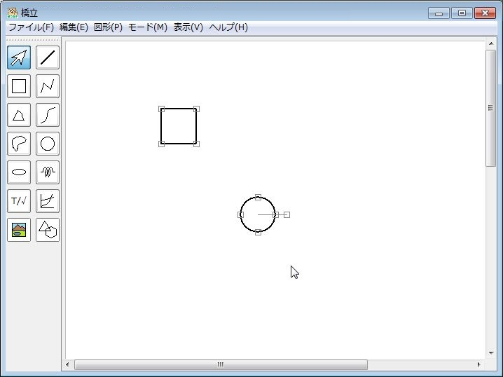

図形をコピー・削除・グループ化する
コピー
- (1) 描画領域で図形を選択する

- (2) 編集メニューでコピーをクリックする、または、CtrlキーとCを同時に押す
- (3) 編集メニューで貼り付けをクリックする、または、CtrlキーとVを同時に押す → 選択した図形がカーソルに位置に複製される
切り取り
- (1) 描画領域で図形を選択する
- (2) 編集メニューで切り取りをクリックする、または、CtrlキーとXを同時に押す
- (3) 編集メニューで貼り付けをクリックする、または、CtrlキーとVを同時に押す → 選択した図形が削除されて、カーソルの位置に貼り付けられる
削除
- (1) 描画領域で図形を選択する
- (2) 編集メニューで削除をクリックする、または、Deleteキーを押す → 選択した図形が削除される
グループ化と解除
グループ化
- (1) 描画領域で図形を複数選択する

- (2) 編集メニューでグループ化をクリックする、または、CtrlキーとGを同時に押す → 選択した図形がグループ化される
- グループ化した図形は、ひとかたまりで選択して、移動したり、拡大・縮小したりできる
グループ化解除
- (1) グループ化した図形を選択する
- (2) 編集メニューでグループ化解除をクリックする、または、CtrlキーとRを押す → グループ化が解除される